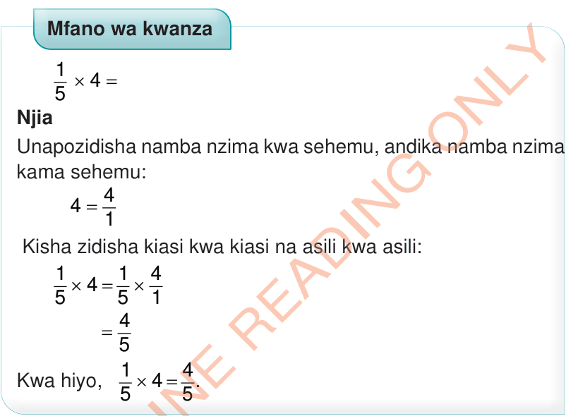
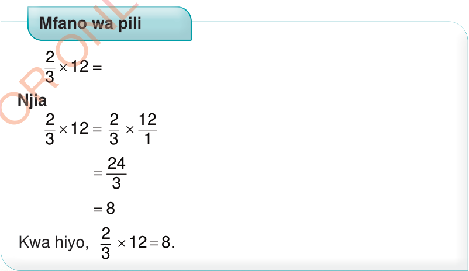

Kuzidisha sehemu kwa namba nzima
Hii inahusisha kubadilisha namba nzima kuwa sehemu ikifuatiwa na kuzidisha sehemu kwa sehemu.

Mfano wa kwanza
Njia
Unapozidisha namba nzima kwa sehemu, andika namba nzima kama sehemu:
Kisha zidisha kiasi kwa kiasi na asili kwa asili:
Kwa hiyo,

Mfano wa pili
Njia
= 8
Kwa hiyo,